M2 Carthagéo - Du discret au continu - Séances 3
Séance 3 - Vers l’interpolation : lissages et potentiels sur des informations valuées (IDW & TIN)
Université Paris 1 Panthéon-Sorbonne
Lundi 21/10/2025
Voisinages et densités sur des points valués
Densité Pondérée
Exercice 0 : Mise en bouche
Via l’outil
Carte de chaleur (Estimation par noyau), faites une carte de densité des bars à Paris, pondérée par le prix de la bière qui y est servie.Trouvez une méthode de pondération qui renforce l’importance locale des bars aux prix les moins élevés, et diminue celle des bars aux prix les plus élevés.
Exercice 0 : Mise en bouche
Via l’outil
Carte de chaleur (Estimation par noyau), faites une carte de densité des bars à Paris, pondérée par le prix de la bière qui y est servie.Trouvez une méthode de pondération qui renforce l’importance locale des bars aux prix les moins élevés, et diminue celle des bars aux prix les plus élevés.
Exercice 1 : densité pondérée réelle
- Parmi les jeux de données à votre disposition, trouvez un attribut qui se prête bien à une carte de densité pondérée, ie. dont la carte produite aurait du sens.
Données valuées
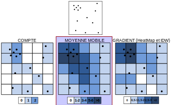Moyennes mobiles sur des points valués
- On peut calculer une moyenne mobile simple sur des points valués à l’aide de l’outil
Grille (Moyenne mobile)(menu Raster -> Analyse)
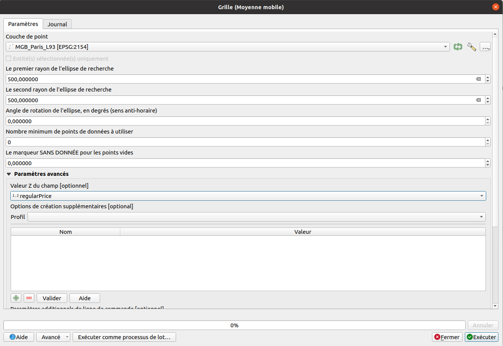
Exercice 2 : Valeur moyenne sur données de ratio
Construisez une carte de la valeur moyenne du prix de la pinte à Paris, dans des rayons de 400m (~ 5min) et 800m (~ 10min).
Comparez ces cartes avec celles du prix des bières en happy hour.
400m regular
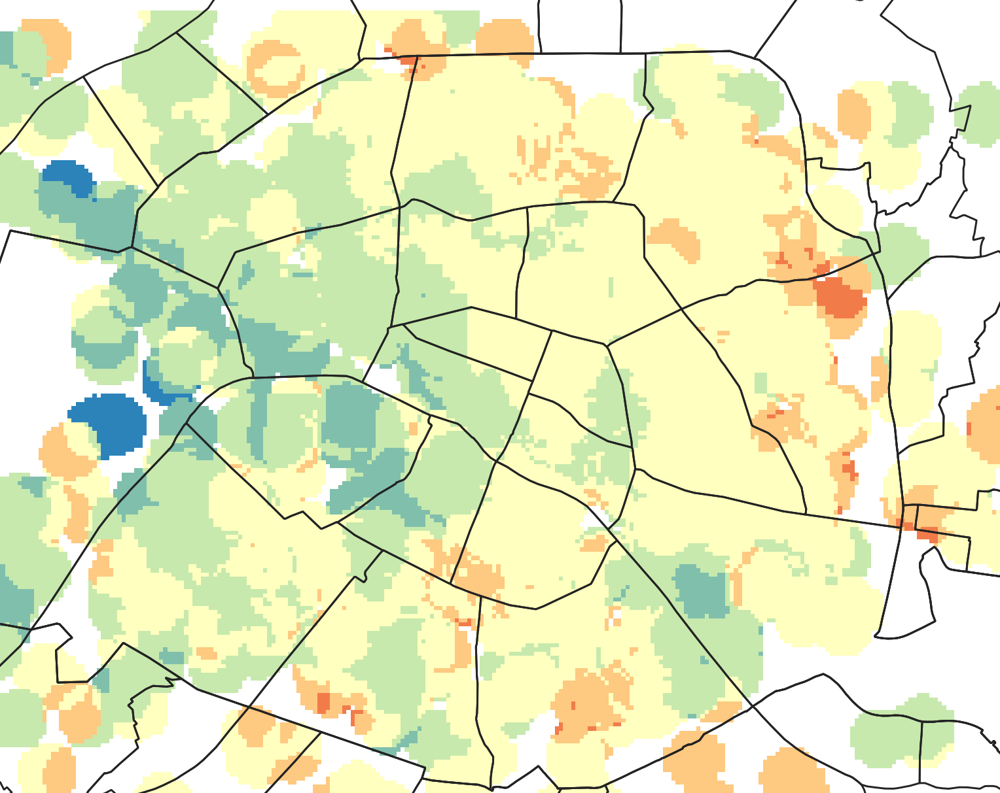
400m happy
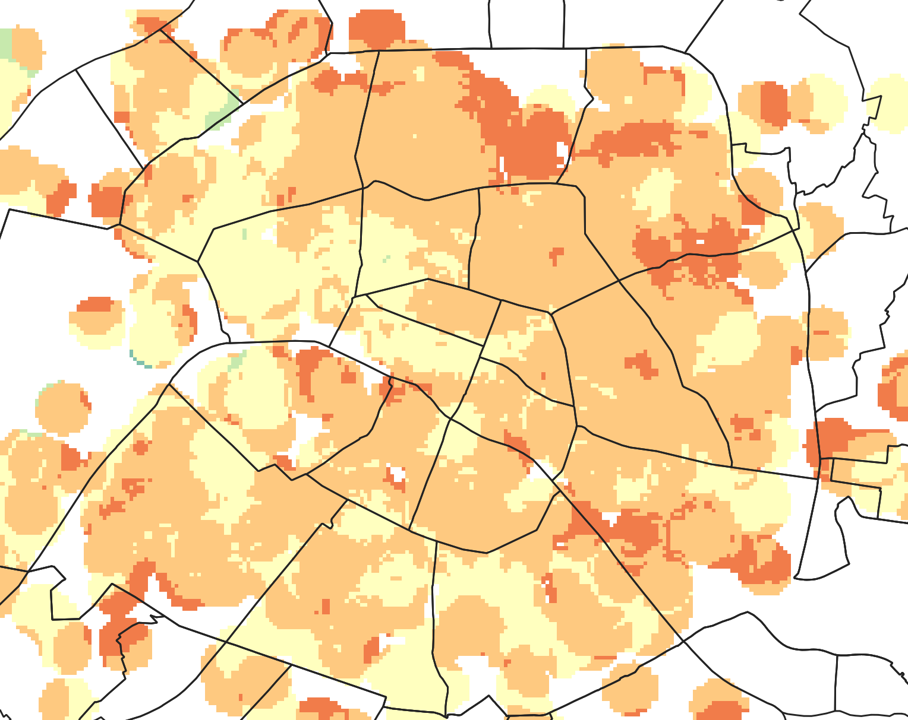
800m regular
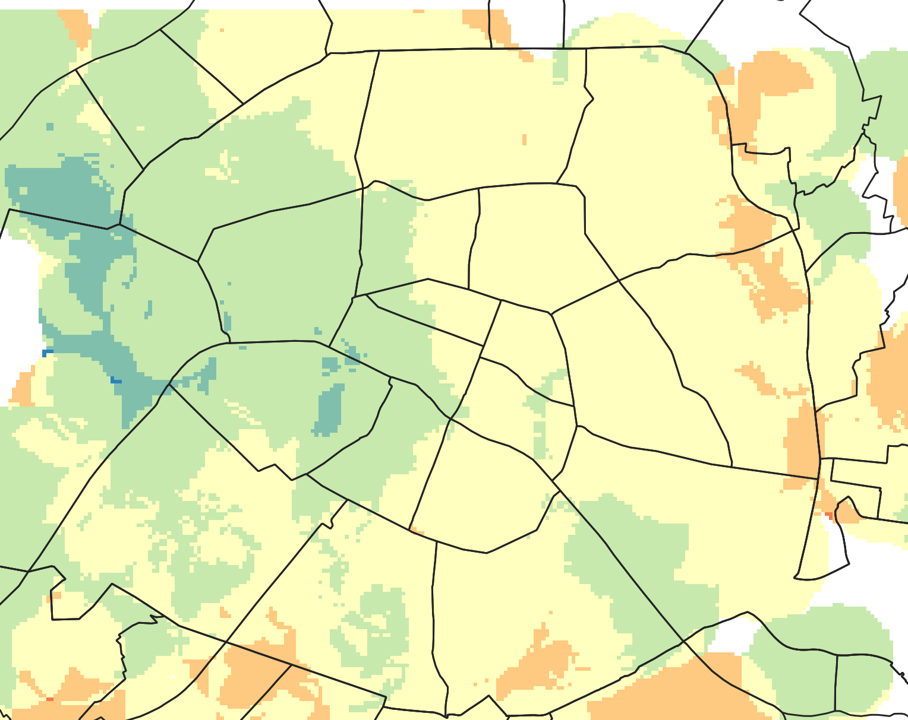
800m happy
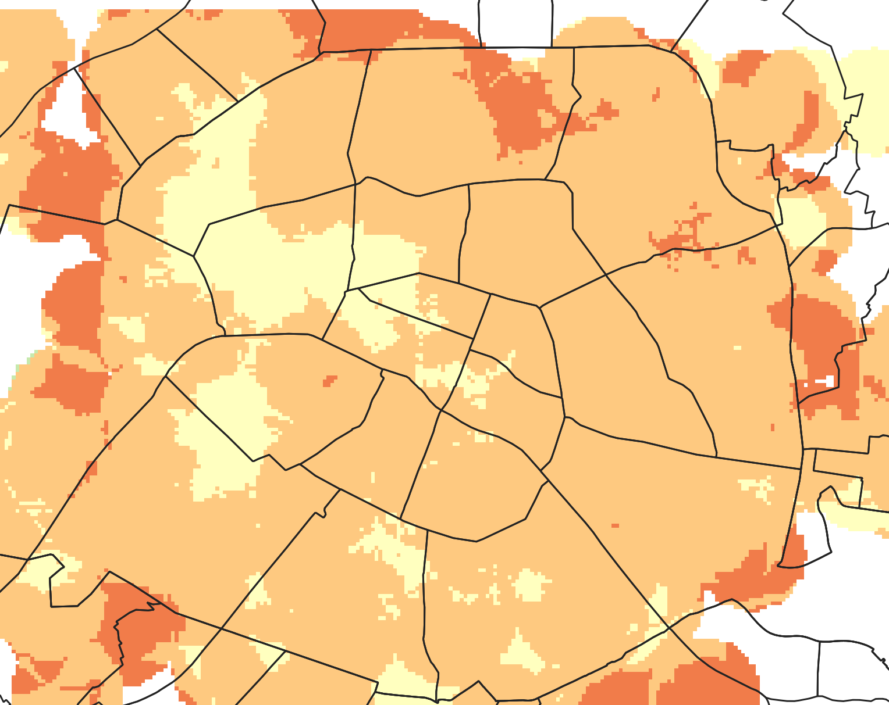
Données valuées
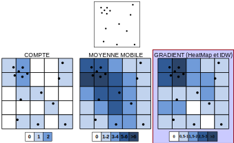Interpollation et lissage
4 grandes familles :
- Gradients par pondération (moyenne) selon la distance dans un espace ellipsoïdal : Inverse Distance Weighted (IDW)
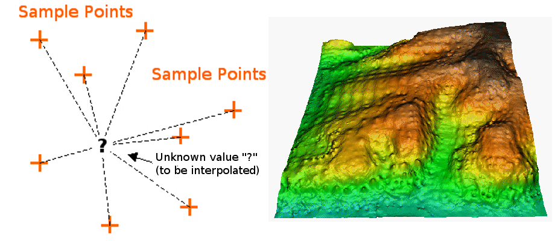
4 grandes familles :
Gradients par pondération (moyenne) selon la distance dans un espace ellipsoïdal : Inverse Distance Weighted (IDW)
Gradients par pondération (moyenne) selon la distance dans un espace polygonal : Triangulated Irregular Network (TIN)
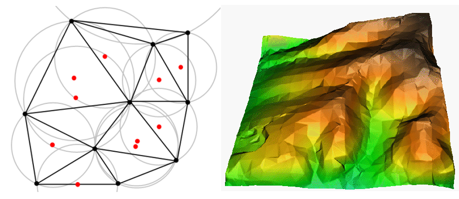
4 grandes familles :
Gradients par pondération (moyenne) selon la distance dans un espace ellipsoïdal : Inverse Distance Weighted (IDW)
Gradients par pondération (moyenne) selon la distance dans un espace polygonal : Triangulated Irregular Network (TIN)
Gradients par pondération (addition) selon la distance dans l’espace complet (interaction) : Potentiels de Stewart
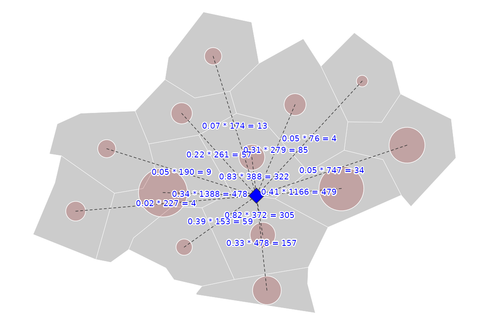
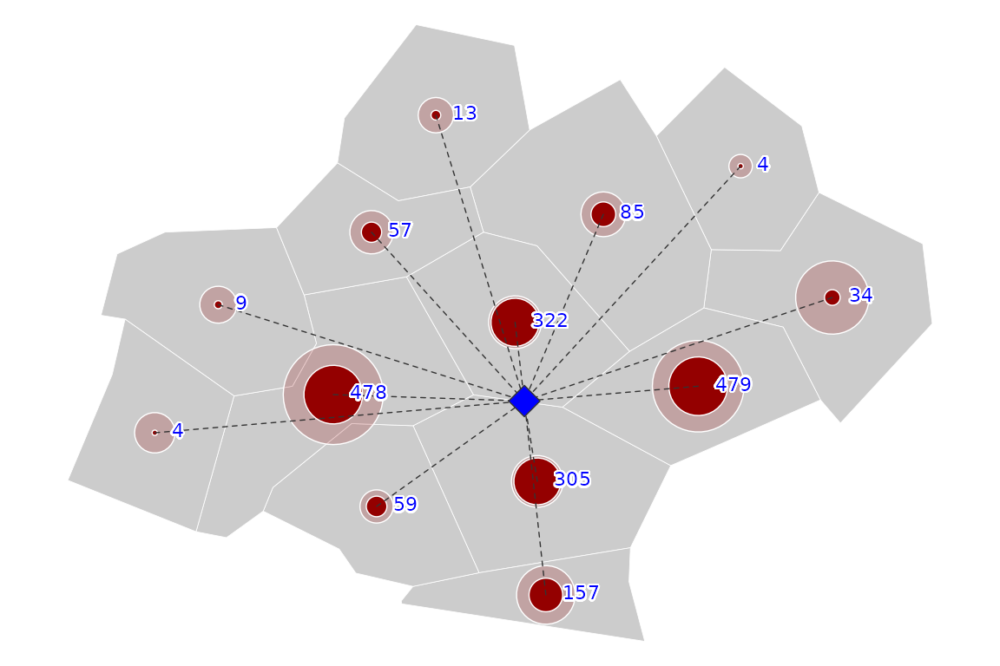
4 grandes familles :
Gradients par pondération (moyenne) selon la distance dans un espace ellipsoïdal : Inverse Distance Weighted (IDW)
Gradients par pondération (moyenne) selon la distance dans un espace polygonal : Triangulated Irregular Network (TIN)
Gradients par pondération (addition) selon la distance dans l’espace complet (interaction) : Potentiels de Stewart
Gradients multiples selon des distances locales : Krigeage
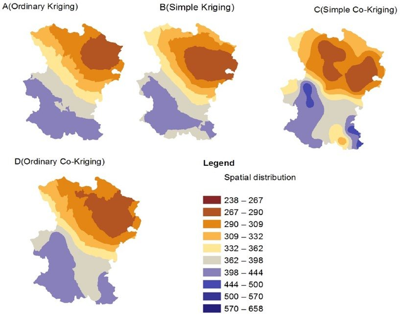
Source : Sadeghi SH, Nouri H, Faramarzi M. (2017) Assessing the Spatial Distribution of Rainfall […]. Air, Soil and Water Research. 2017;10. doi:10.1177/1178622116686066
IDW
Algorithme d’interpolation classique et simple, calcule une valeur estimée par pondération des valeurs de chacun des points connus dans un rayon défini, selon une fonction de la distance à l’exposant P.
Plus P est important, plus la distance jouera un frein.
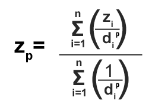
IDW
Exercice 3 : IDW
Utilisez l’outil
Interpolation IDWpour estimer une interpolation des prix de la pinte à Paris.Testez plusieurs valeurs de P :
- Que se passe-t-il quand P vaut 0 ?
- Que se passe-t-il quand P est très fort ?
- Comment choisir une valeur de P ?
TIN
Interpolation basée sur une triangulation de Delaunay : des triangles de points sont créés, et dans chaque triangle, un gradient de valeurs (pente) est ajusté à partir des valeurs des 3 sommets.
Possibilité de faire varier la méthode de calcul de la pente : linéaire ou Clough-Toucher (polynômiale).
TIN
Interpolation basée sur une triangulation de Delaunay : des triangles de points sont créés, et dans chaque triangle, un gradient de valeurs (pente) est ajusté à partir des valeurs des 3 sommets.
Possibilité de faire varier la méthode de calcul de la pente : linéaire ou Clough-Toucher (polynômiale).
Exercice 4 : TIN
Utilisez l’outil
Interpolation TINpour estimer une interpolation des prix de la pinte à Paris.Comparez la méthode linéaire et Clough-Toucher : qu’est-ce qui varie ?
Les interpollation TIN sont-elles adaptées à l’interpolation des prix des bars ? Testez cette méthode sur les vélibs.
Quels sont les avantages de cette méthode par rapport à IDW ? Sur quels types de données les employer ?
M2 Carthagéo - Analyse Spatiale R.C. - Séance 3